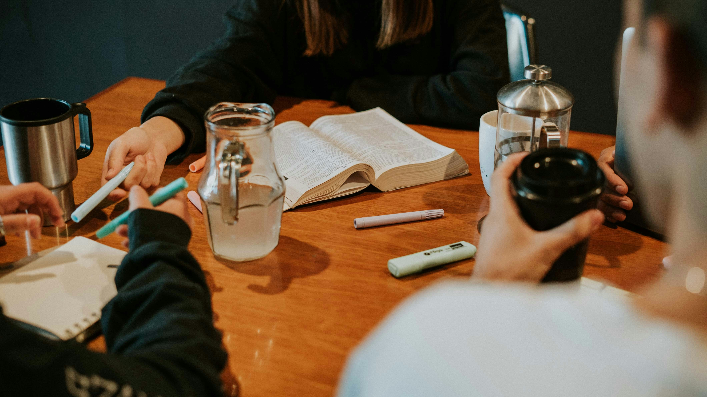
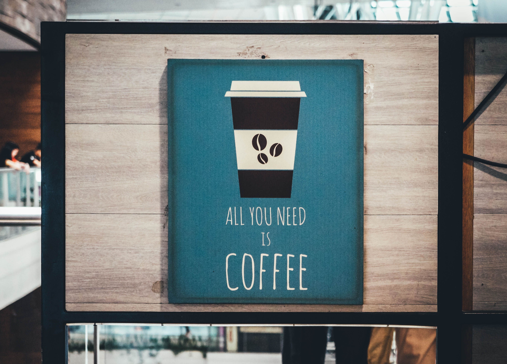

Deine gemütliche Kaffeepause direkt neben der Uni.
Die Kaffeebar bietet seinen Gästen in gemütlicher Atmosphäre feinsten italienischen Kaffeegenuss. Nur einen Steinwurf von der Universitätsbibliothek entfernt, ist sie der perfekte Ort für eine Pause zwischen den Vorlesungen, ein Treffen mit Freunden oder eine ruhige Lernstunde bei einem guten Kaffee.

Perfekt gelegen für eine schnelle Kaffeepause zwischen den Lernsessions.
Genieße deinen Kaffee draußen, wenn das Wetter mitspielt.
Faire Preise und eine entspannte Atmosphäre zum Verweilen.
Sorgfältig zubereitet für den perfekten Espresso, Cappuccino oder Flat White.
